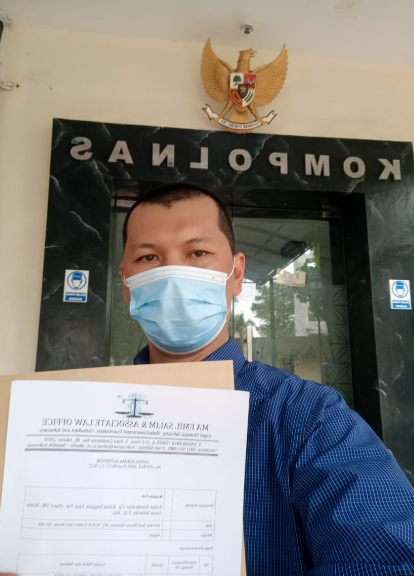
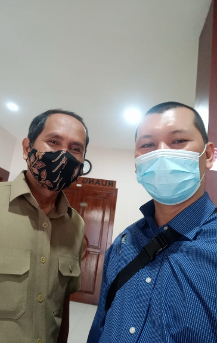
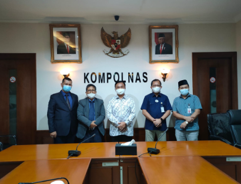

Activities
Keterlibatan Strategis



Kordinasi Kepolisian
KORDINASI DENGAN KAPOLRI, KABARESKRIM DAN PROPAM, DALAM RANGKA MENDUKUNG PROGRAM KEPOLISIAN REPUBLIK INDONESIA YANG PRESISI.


Arahan Presiden di Istana
MEMOHON ARAHAN DAN KEBIJAKAN BAPAK PRESIDEN JOKO WIDODO DI ISTANA NEGARA SEHUBUNGAN PERMASALAHAN LAHAN KSO DI PESAPEN KALIANAK, SURABAYA.

Gugatan Wanprestasi
GUGATAN WANPRESTASI YANG TERJADI DI PENGADILAN NEGERI BATAM ANTARA PERUSAHAAN PERKAPALAN NASIONAL MELAWAN PMA INTERNASIONAL.

Advokasi Yayasan PMII
ADVOKASI/PEMBELAAN HUKUM KEPADA YAYASAN PMII BUNGA DI WILAYAH PN JAKARTA TIMUR SEHUBUNGAN GUGATAN PMH.

Kasus Penipuan Asuransi
MEMBERIKAN ADVOKASI KEPADA KLIEN YANG MENGALAMI PENIPUAN ASURANSI.

Kerjasama Pajakind
KERJASAMA DENGAN PAJAKIND, UNTUK MENGENAL LEBIH DALAM LAGI MENGENAI PERPAJAKAN, SEBAGAIMANA SLOGAN PAJAK "ORANG BIJAK TAAT PAJAK".